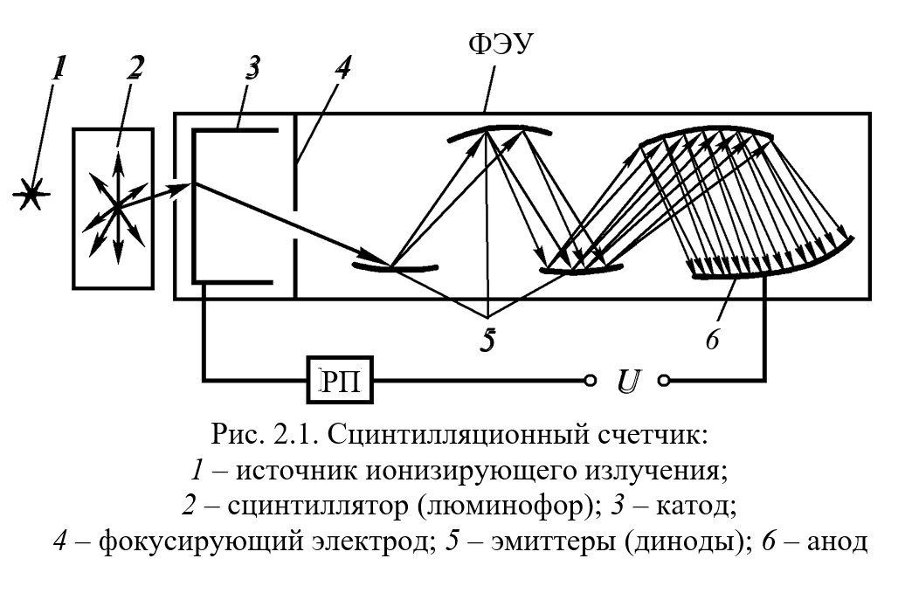
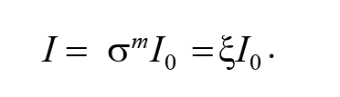
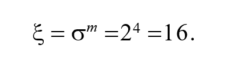

Ознакомление с основами сцинтилляционного метода регистрации ионизирующих излучений; измерение счетной характеристики сцинтилляционного детектора и выбор рабочего напряжения фотоумножителя.
Пока частица летит в вакууме и ни с чем не взаимодействует, она не наблюдаема. Частицу можно зарегистрировать лишь по результату ее взаимодействия с веществом. Известны различные виды такого взаимодействия. Заряженные частицы, проходя через вещество, вызывают ионизацию и возбуждение атомов среды, что в свою очередь, может проявляться в виде заметных эффектов: импульсов тока, вспышек света, выделения тепла и т. д.
Энергия, затрачиваемая частицей в ходе процессов, перечисленных выше, в дальнейшем может преобразовываться в другие виды энергии. Ионизация некоторых веществ способствует протеканию в них специфических химических реакций, в результате которых возникают новые вещества. Любые процессы, заключающиеся в преобразовании энергии излучения в другие виды энергии, можно использовать для регистрации частиц.
Энергия, затрачиваемая частицей в ходе процессов, перечисленных выше, в дальнейшем может преобразовываться в другие виды энергии. Ионизация некоторых веществ способствует протеканию в них специфических химических реакций, в результате которых возникают новые вещества. Любые процессы, заключающиеся в преобразовании энергии излучения в другие виды энергии, можно использовать для регистрации частиц.
Для обнаружения ионизирующих излучений, измерения их энергии и других свойств применяются детекторы, которые являются важнейшей частью приборов. Работа детекторов основана на регистрации эффектов взаимодействия с веществом потока частиц или фотонов. Благодаря этим эффектам частицы могут быть зарегистрированы при появлении на выходе из детектора электрических импульсов тока или напряжения, вспышек света, почернения фотоэмульсии или изменения структуры вещества чувствительного элемента.
Для регистрации ионизирующих излучений используются следующие методы их обнаружения: химический, фотографический, полупроводниковый, тепловой (калориметрический), ионизационный, сцинтилляционный и др.
Данный метод обнаружения ионизирующих излучений основан на том явлении, что возникающие при воздействии излучений ионы и возбужденные атомы и молекулы вещества могут диссоциировать, образуя свободные радикалы. Эти ионы и радикалы вступают в реакцию между собой или другими атомами и молекулами, образуя новые вещества, появление и количество которых позволяет судить о наличии и количественной характеристике ионизирующих излучений.
Под воздействием излучения прозрачный раствор детектора сначала становится малиновым или пурпурным, причем интенсивность цвета пропорциональна накопленной дозе. Этот метод используется в дозиметрах ДП-70М, ДП-70МП и др.
Частица ионизирующего излучения при попадании на слой фотоэмульсии оставляет на нем след, который после проявления фотопластинки становится видимым, так как образуются очень малые зерна металлического серебра (почернение фотослоя).
Плотность почернения фотослоя измеряют с помощью фотометров. В таких детекторах облучению подвергается большое количество слоев фотоэмульсии, после облучения каждый из слоев проявляется. Фотоэмульсия представляет собой взвешенные в желатине маленькие кристаллики галоидного серебра (хлористого или бромистого). Чем больше доза воздействующих на фотослой излучений, тем больше степень его почернения.
Детекторы (ядерные фотоэмульсии) применяются для измерения потоков частиц высоких энергий (десятки гигаэлектронвольт – ГэВ), например космических лучей, а также для измерения гамма- и нейтронных излучений в диапазоне от 0 до 10 Р, а при использовании специальных фоточувствительных слоев – до 20 000 Р.
Основным элементом полупроводникового детектора является монокристаллический полупроводник (кремний или германий), выполненный в виде пластины, в которой создан p–n-переход. Для достижения высокой чувствительности необходимо, чтобы в отсутствие регистрируемых частиц полупроводник был обеднен носителями, т. е. имел минимальную электропроводность. Это достигается в области p–n- перехода, особенно если подать на него обратное (запирающее) напряжение. Слой полупроводника вблизи границы p–n-перехода, обедненный носителями заряда и обладающий высоким удельным сопротивлением, является чувствительным объемом полупроводникового детектора.
Заряженная частица, попадая в кристалл, ионизирует среду, создавая дополнительные электронно-дырочные пары. Появление новых носителей заряда приводит к возникновению импульса тока в цепи детектора, фиксируемого аппаратурой. Заряд, прошедший в цепи детектора, пропорционален энергии, выделенной частицей в чувствительном объеме. Такие детекторы используются в радиометрических, дозиметрических и спектрометрических приборах.
Достоинствами полупроводниковых детекторов являются линейная зависимость импульса тока от поглощенной энергии и высокая временная разрешающая способность (малое «мертвое время» – 10–8 с).
Недостатки: наличие собственной электропроводности, изменение характеристик при больших дозах, сложная технология изготовления материалов для детекторов.
Энергия ионизирующих излучений, поглощенная в веществе, в конечном итоге превращается в тепло. Этот тепловой эффект используется в калориметрах для измерения активности вещества или мощности дозы. Временная разрешающая способность тепловых детекторов малых объемов имеет достаточно большое значение (10–8 с).
При этом методе обнаружения и измерения характеристик ионизирующих излучений в качестве ионизирующей среды используются газы, в которых образующиеся ионы обладают большой подвижностью. Воздействуя на газовую среду электрическим полем, легко привести создаваемые излучением ионы в направленное движение. Возникающий при этом электрический ток является не только указанием на то, что газовая среда облучается, но и позволяет также судить об активности источников ионизирующих излучений, о создаваемой ими дозе и мощности дозы излучений.
В измерительной аппаратуре ионизация газовой среды про- исходит в устройствах, предназначенных для восприятия энергии ионизирующих излучений и преобразования ее в энергию электрического тока. Такие устройства называются воспринимающими или детекторами излучений. К ним относятся ионизационные камеры и газоразрядные счетчики.
В основе этого метода обнаружения излучений лежит явление люминесценции (свечение вещества), вызванное ионизацией и возбуждением атомов и молекул. Входящие в их состав электроны переходят на более высокие энергетические уровни и спустя некоторое время возвращаются в основное состояние (релаксация). Возбужденные атомы при возвращении их в нормальное состояние излучают кванты (фотоны).
Вещества, в которых под воздействием ионизирующих излучений возникают световые вспышки (сцинтилляции), называются сцинтилляторами (люминофорами).
Избыток энергии высвобождается в виде сцинтилляций (кратковременных световых вспышек продолжительностью 10–4– 10–9 с). По количеству вспышек в единицу времени можно судить о качественной характеристике ионизирующего излучения (активности).
Сцинтилляционные методы регистрации радиоактивных изучений основаны на измерении интенсивности излучения люминесцентных веществ с использованием фотоэлектронных умножителей (ФЭУ).
ФЭУ позволяет преобразовывать слабые световые вспышки люминесцентных веществ (люминофоров) в достаточно большие электрические импульсы, которые легко зарегистрировать обычной электронной аппаратурой.
Достоинства метода: малое время высвечивания сцинтилляторов обеспечивает высокое временное разрешение (10–7–10–8 с) или малое «мертвое время», сравнимое с временем высвечивания; пропорциональность между амплитудой светового сигнала и энергией зарегистрированной частицы позволяет распознать частицы и измерить их энергию.
Наличие анализатора импульсов дает возможность сконструировать на основе сцинтилляционного детектора не только радиометр, но и дозиметр или даже спектрометр. Сцинтилляционный счетчик (рис. 2.1) состоит из оптически соединенных между собой люминесцирующего кристалла, в котором энергия ионизирующего излучения превращается в световые вспышки, и ФЭУ, преобразующего вспышки в достаточно большие электрические импульсы.
Процессы, происходящие в сцинтилляционном счетчике, можно подразделить на следующие стадии: поглощение радиоактивного излучения люминофором (сцинтиллятором); возбуждение атомов и молекул люминофора поглощенной энергией и затем излучение фотонов света; бомбардировка фотонами света катода фотоэлектронного умножителя (ФЭУ); поглощение фотонов на катоде ФЭУ и выход фотоэлектронов; электронное умножение (вторичная эмиссия электронов эмиттерами). ФЭУ совмещает свойства фотоэлемента и усилителя тока с большим коэффициентом усиления и состоит из катода 3, динодов 5 (эмиттеров), анода 6, на которых происходит вторичная эмиссия электронов.
Сцинтилляционный счетчик (сцинтиллятор и ФЭУ) заключен в светонепроницаемый кожух, чтобы исключить попадание постороннего света на фотокатод и диноды (эмиттеры) ФЭУ. Кроме того, ФЭУ защищен от внешних электрических и магнитных полей, которые нарушают фокусировку электронов. Вся система ФЭУ размещена в стеклянном баллоне с высоким вакуумом, необходимым для сохранения поверхностей фотослоя и динодов, а также свободного движения электронов.
В сцинтилляционном счетчике ФЭУ работает в импульсном режиме. Световые импульсы (фотоны), возникающие в сцинтилляторе, под действием излучений, вырывают из фотокатода электроны. Электроны ускоряются электрическим полем, существующим между электродами ФЭУ, которые обычно называются эмиттерами или динодами.
Умножение числа электронов происходит при попадании потока первичных электронов на эмиттер 5. Выбитые электроны ускоряются полем и фокусируются на последующий динод, из которого они вновь выбивают примерно удвоенное количество электронов и т. д. Таким образом, лавина электронов возрастает от катода к аноду, происходит преобразование очень слабых вспышек, возникающих в сцинтилляторе, в электрические импульсы, регистрируемые прибором (РП). Коэффициент усиления ФЭУ составляет 105–106 раз.
Если умножитель имеет m эмиттеров, а коэффициент электронного умножения каждого из них равен , то ток I, который возникает на аноде ФЭУ, связан с током I0 на фотокатоде соотношением
Если предположить, что под действием фотона с катода был выбит один фотоэлектрон (см. рис. 2.1), а на каждом из последующих четырех эмиттеров (m = 4) от действия одного электрона выбивается по два электрона ( = 2), то коэффициент электронного умножения ФЭУ (число электронов, порожденных одним фотоэлектроном и собранных на аноде) будет равен
Коэффициент электронного умножения для ФЭУ зависит от работы выхода электрона из материала эмиттера, эффективности собирания электронов с предыдущего эмиттера, разности потенциалов между эмиттерами и их числа m.
Эффективность превращения энергии бомбардирующих люминофор частиц в световую энергию фотонов называется конверсионной эффективностью к люминофора, которая определяется отношением энергии световых фотонов Еф к энергии поглощения Епогл, которая теряется ионизирующей частицей в сцинтилляторе:
Оставшаяся часть энергии тратится на возбуждение и релаксацию в исходное состояние без испускания видимого света. Сцинтилляционные счетчики обладают более высокой эффективностью счета (до 100%) и разрешающей способностью по сравнению с газоразрядными. С помощью сцинтилляционных счетчиков определяется активность и мощность доз ионизирующих излучений. Недостатками сцинтилляционных счетчиков являются хрупкость монокристаллов, гигроскопичность некоторых из них, изменение их свойств во времени, сравнительно высокое напряжение на ФЭУ, а также наличие тока при отсутствии излучений.
В качестве люминофоров в сцинтилляционных счетчиках применяются прозрачные неорганические и органические кристаллы, пластмассы и жидкости.
Для регистрации альфа-излучений наиболее часто используются кристаллы сернистого цинка, активированного серебром ZnS(Ag) или медью ZnS(Cu). Для этих сцинтилляторов конверси- онная эффективность при облучении альфа-частицами к 0,28, а при облучении бета-частицами к 0,10, что позволяет использовать ZnS(Ag) для регистрации тяжелых частиц.
Бета- и гамма-излучения регистрируются кристаллами галогенидов, активированные таллием (йодистый натрий NaI(Tl), йодистый цезий CsI(Tl), йодистый литий LiI(Tl)), вольфрамитами кальция CaWO4 и кадмия CdWO4. Их время высвечивания составляет примерно 106 с. Однако они обладают высокой гигроскопичностью и относительно быстрым «старением».
Органические сцинтилляторы – это монокристаллы органических углеводородов – антрацен (C14H10), стильбен (C14H12), нафталин (C10H8), пластмассы (твердые растворы сцинтилляторов на основе полистирола и поливинилтолуола).
Органические сцинтилляторы по своему химическому составу очень близки к органическим тканям. В качестве сцинтилляторов применяются и инертные газы – гелий, аргон, ксенон и др. Время высвечивания органических сцинтилляторов и инертных газов составляет 10 -9–10 -8 с.